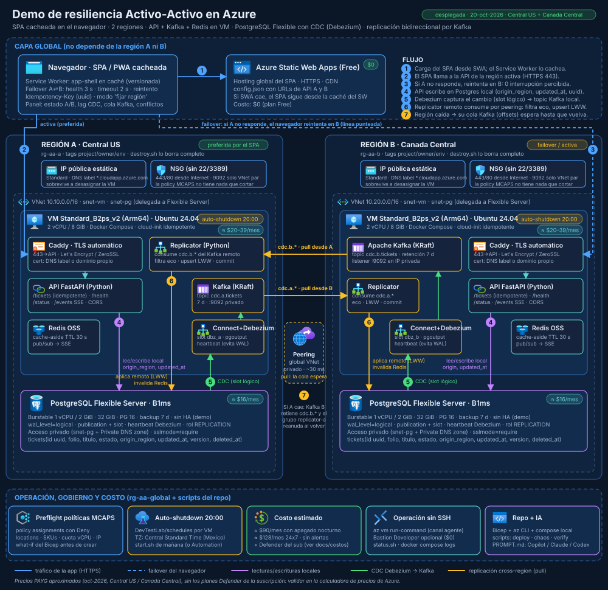

Una aplicación crítica que sigue atendiendo cuando se cae una región completa: SPA cacheada en el navegador, dos regiones con API, Kafka y Redis en una VM, PostgreSQL con captura de cambios (Debezium) y replicación bidireccional. Duración sugerida: 15 minutos.
Región A Central USRegión B Canada CentralApagado automático 20:00 CDMXCosto ≈ 90 USD/mes con apagado nocturnoSin SSH operación por az vm run-command
Todo se hace desde la carpeta del repositorio con la suscripción donde está desplegada la demo activa en az. Marca cada punto; la lista se guarda en este navegador.
La ventana "automática" es el usuario final: no sabe de regiones; en su formulario eliges a qué región mandar cada registro. Los visores muestran la tabla de cada base en vivo y resaltan lo que llega por replicación. Si la región A está caída al abrir la ventana automática por primera vez, usa la URL de B con el mismo /app/.

Diagrama para tener a mano. Lectura rápida: cada escritura va a la base local, Debezium la captura por el slot lógico, el Replicator de la otra región la consume del Kafka de origen por el peering y la aplica.
00:00Cronómetro de la presentación (opcional).
Escenas
Escena 0 · Normalidad: una escritura viaja de A a B
3 min
En la ventana automática elige "Guardar en: Región A" y crea un registro (por ejemplo "Pedido 1001 · 2 cajas"). Mira el visor de B: la fila aparece resaltada como "replicado desde A".
Qué ve el público
En 1 a 3 segundos el registro aparece en B con la etiqueta escrito en A (y en el visor de B, resaltado como replicado desde A).
En la bitácora de B: "replicado … desde A (applied)".
Panel: Debezium RUNNING, Replicator vivo, cola → 0, lag de unos cientos de milisegundos.
Qué decir
Cada región es completa y acepta escrituras: activo-activo, no activo-pasivo.
Debezium lee el WAL de Postgres por un slot lógico y publica el cambio en el Kafka local.
El Replicator de la otra región lo consume por una red privada (peering) y lo aplica; el regreso del mismo cambio se descarta como eco gracias a origin_region.
Cambia a "Guardar en: Región B", crea otro registro o edita uno (botón "editar") y muéstralo en el visor de A: la replicación es simétrica.
Escena 1 · Cae la región A
4 min
En la terminal, desasigna la VM de A. Mantén a la vista la ventana automática.
./scripts/chaos.sh stop-vm A # ≈ 35 s
Qué ve el público
El badge pasa a Conectado a Región B (failover) sin ningún error en pantalla; la bitácora registra "failover: Región A → Región B".
El usuario sigue creando y editando registros (hazlo en la ventana automática).
En el panel de B: Cola → A: N eventos esperan a A crece con cada escritura; el Replicator de B dice "Kafka A: NO alcanzable".
Qué decir
El failover está en el navegador: sondea la salud cada 3 s y reintenta en la otra región en el mismo segundo. Cero interrupción percibida.
Las escrituras usan un identificador generado por el cliente: reintentar nunca duplica.
Kafka B conserva los eventos con los offsets del grupo replicator-a: la cola espera a que A vuelva, no se pierde nada.
Variante rápida (20 s en lugar de 35 s): ./scripts/chaos.sh stop-api A detiene solo la API y Caddy; Kafka y el Replicator de A siguen vivos, así que la cola de B no crece. Variante base de datos: ./scripts/chaos.sh stop-db A.
Escena 2 · Vuelve A y se pone al día
3 min
./scripts/chaos.sh start-vm A # ≈ 75 s hasta /health
./scripts/verify-sync.sh # conteo + hash idénticos
Qué ve el público
La cola de B baja a 0 en segundos.
En la bitácora de la ventana fijada a A aparecen en ráfaga los "replicado … desde B".
La ventana automática regresa a A tras tres sondeos sanos ("failback").
verify-sync.sh imprime el mismo número de filas y el mismo hash en A y B.
Qué decir
El Replicator de A reanuda exactamente donde iba: los offsets viven en el Kafka de origen.
RPO: lo que A escribió justo antes de caer y B no alcanzó a leer llega ahora, porque el log de Kafka A está en disco. Es la naturaleza del activo-activo asíncrono.
El failback tiene histéresis para evitar rebotes.
Escena 3 · Partición y conflicto (opcional)
3 min
./scripts/chaos.sh partition # bloquea 9092 entre las VNets
# editar el texto del MISMO registro en la ventana fijada a A y en la fijada a B
./scripts/chaos.sh heal
./scripts/verify-sync.sh
Qué ve el público
Ambas regiones siguen aceptando escrituras; las colas crecen en los dos paneles.
Al sanar, los Replicators drenan y el registro queda con la última escritura según updated_at.
Las bases vuelven a coincidir.
Qué decir
Regla de conflicto: gana la última escritura por reloj del servidor Postgres; empate → región alfabéticamente menor. Determinista y explicable.
En producción: propiedad por región (home region) o relojes híbridos; aquí se muestra el mecanismo mínimo.
Cierre
2 min
0 interrupción El navegador conmuta de región en el mismo segundo y la app está cacheada por el Service Worker.
Nada se pierde Kafka guarda la cola de cada región hasta que la otra vuelve; los offsets viven en el origen.
Sin puertos de gestión Ni SSH ni RDP: las VMs se operan por el agente de Azure. Postgres y Kafka nunca salen a Internet.
≈ 90 USD/mes Dos VMs Arm64, dos PostgreSQL B1ms, apagado automático a las 20:00. Static Web Apps es gratis.
Si preguntan por producción: Front Door al frente, Kafka con 3 brokers y TLS, Postgres con HA zonal, propiedad de registros por región, Key Vault y observabilidad. Está en docs/decisiones.md.
Si algo falla durante la demo
Síntoma
Qué hacer
Una región no responde por HTTPS tras encender
./scripts/fix-subnet-nsg.sh (la gobernanza asocia NSG propios a las subredes) y luego ./scripts/wait-healthy.sh.
/health en 503
./scripts/status.sh. Postgres detenido → ./scripts/start.sh. VM apagada → ./scripts/chaos.sh start-vm A.
Debezium no está RUNNING
./scripts/configure-cdc.sh A (idempotente). Logs: run_on_vm A 'cd /opt/aa && docker compose logs --tail 50 connect'.
La cola no baja al volver la región
Revisa que no quede la regla ChaosDenyKafka: ./scripts/chaos.sh heal. Logs del replicator en la VM.
El SPA no carga
Usa la URL /app/ de la otra región. Si cambió una API: ./scripts/push-bundle.sh A y B.
WAL retenido grande en el panel
Normal tras días con la VM apagada y Postgres encendido; baja a KiB en cuanto Debezium reanuda. Para evitarlo: ./scripts/stop.sh --db.
Glosario para preguntas del público
WAL
Write-Ahead Log de PostgreSQL: el registro secuencial donde se anota cada cambio antes de aplicarlo a las tablas. Sirve para recuperación y es lo que Debezium lee para capturar cambios.
Slot de replicación
Marcador que obliga a Postgres a conservar el WAL hasta que el consumidor (Debezium) confirme que lo procesó. Si el consumidor está apagado, el WAL retenido crece.
CDC
Change Data Capture: convertir cada inserción, actualización o borrado en un evento. Aquí lo hace Debezium sobre Kafka Connect con el plugin pgoutput.
Eco
Un cambio replicado de A a B vuelve a capturarse en B y regresa a A. Se descarta porque trae origin_region = a.
LWW
Last Writer Wins: ante dos versiones del mismo registro gana la de updated_at más reciente (reloj del servidor Postgres).
RPO / RTO
Pérdida máxima de datos tolerable / tiempo de recuperación. En la demo: RPO = segundos de lag de replicación; RTO percibido por el usuario = 0 (el navegador conmuta solo).
Peering
Conexión privada entre las VNets de las dos regiones; por ahí viaja Kafka (puerto 9092) sin exponerse a Internet.
Service Worker
Script del navegador que cachea el app-shell del SPA: la aplicación carga aunque el hosting no responda.